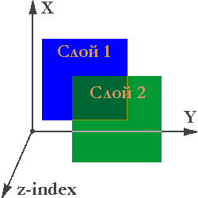

Глава 12
Позиционирование.
Для начала разберемся с самим понятием позиционирование. Позиционированием называют определение конкретного месторасположения на странице того или иного элемента (бокса). Позиционирование бывает абсолютным, относительным, фиксированным и статическим.
Потороплюсь с примером, ниже будем разбираться, что в нем написано.
<!DOCTYPE HTML PUBLIC "-//W3C//DTD HTML 4.01 Transitional//EN" "http://www.w3.org/TR/html4/loose.dtd">
<html>
<head>
<title>Позиционирование.</title>
</head>
<body>
<div style="float: left; background: #c00; border-style: double; padding: 5px; height: 1500px; width: 300px">
<div style="position: relative; left: 10px; top: 50px; background: #c0c; border-style: double; padding: 5px; width: 200px">Блок позиционирован относительно крёв элемента родителя.</div>
</div>
<div style="position: absolute; left:200px; top: 350px; background: #cc0; border-style: double; padding: 5px; width: 200px">Блок абсолютно позицонорован и выведен из общего потока, его положение задаётся от краёв окна браузера. Как видите данный блок может накладываться на другие элементы страницы.</div>
<div style="position: fixed; left: 150px; top: 150px; background: #0cc; border-style: double; padding: 5px; width: 200px">А это фиксированный блок, тоже выведен из общего потока однако при прокручивании страницы он не меняет своего положения. Ранние версии браузера Internet Explorer игнорируют данное свойство.</div>
</body>
</html>
Итак, для того, что бы позиционировать какой либо элемент к нему применяют свойство position и одно из его возможных значений:
- absolute - Абсолютное позиционирование элемента.
- relative - Относительное позиционирование элемента.
- fixed - Фиксированное позиционирование элемента.
- static - Статическое позиционирование элемента. (Элемент отображаются как обычно.)
- inherit - Наследует значение элемента родителя.
Теперь давайте углубляться..
Абсолютное позиционирование.
Абсолютно позиционированный элемент (position: absolute) выводится из общего потока и несмотря на другие элементы и их взаимное расположение, занимает указанное место на странице от края/краёв окна браузера. При таком способе позиционирования один элемент может накладываться поверх другого.
Для того чтобы позиционировать элемент от края/краёв окна браузера, нам понадобятся следующие свойства CSS:
- bottom - Расстояние от нижнего края окна браузера.
- left - Расстояние от левого края окна браузера.
- right - Расстояние от правого края окна браузера.
- top - Расстояние от верхнего края окна браузера.
Данные расстояния могут быть заданы в пикселях, процентах или любых других принятых единицах измерения CSS, значение по умолчанию - auto.
Пример:
<!DOCTYPE HTML PUBLIC "-//W3C//DTD HTML 4.01 Transitional//EN" "http://www.w3.org/TR/html4/loose.dtd">
<html>
<head>
<title>Абсолютное позиционирование.</title>
</head>
<body>
<div style="background: #0f0; border: #000000 2px solid; padding: 5px; margin: 10px; width: 300px; height: 200px;"><h1>Блок №1</h1></div>
<div style="background: #00f; border: #000000 2px solid; padding: 5px; margin: 10px; width: 500px; height: 100px;"><h1>Блок №2</h1></div>
<div style="position: absolute; left:200px; top: 100px; background: #f00; border: #000 2px solid; padding: 5px; width: 200px; height: 200px;"><h1>Блок №3</h1> Данный блок абсолютно позиционирован! <br><br> Блоки 1 и 2 никак не влияют на его месторасположение.</div>
</body>
</html>
Как видите, в примере третий блок вышел из общего потока элементов и живёт по своим собственным правилам, остальная разметка страницы никак не влияет на месторасположение данного блока.
Относительное позиционирование.
Относительное позиционирование (position: relative) определяет место элемента относительно краёв элемента родителя и не выводится из общего потока.
Так же как и в случае с абсолютным позиционированием расстояния от края/краёв родительского элемента задаётся с помощью свойств: bottom, left, right, top.
Пример:
<!DOCTYPE HTML PUBLIC "-//W3C//DTD HTML 4.01 Transitional//EN" "http://www.w3.org/TR/html4/loose.dtd">
<html>
<head>
<title>Относительное позиционирование.</title>
<style type="text/css">
h1 {
color: #008000;
font-size:20px
}
div.blok1 {
background: #c0e4ff;
border: #000000 2px solid;
padding: 5px;
width: 500px;
height: 400px;
}
div.blok2 {
position: relative;
left: 150px;
background: #ffa0c5;
border: #000 2px solid;
padding: 5px; width: 250px;
height: 200px;
}
</style>
</head>
<body>
<div class="blok1">
<h1>Элемент родитель - блок №1</h1>
<div class="blok2">
<h1>Блок №2</h1>
Данный блок позиционирован относительно левого края элемента родителя.
</div>
</div>
</body>
</html>
В случае если элемент родитель явно не задан, то отчет ведётся от края/краёв окна браузера.
Фиксированное позиционирование.
Фиксированное позиционирование (position: fixed) похоже на абсолютное, элемент выводится из общего потока, его координаты рассчитываются от краёв окна браузера, но при прокрутке страницы элемент не меняет своего положения.
Пример:
Файл style.css
h1 {
color: #800;
text-align: center;
font-size:30px
}
h2 {
color: #088;
text-align: center;
font-size:18px
}
div.blok1 {
background-image: url(fon.gif);
border: #000 2px solid;
padding: 5px;
width: 800px;
height: 4000px
}
div.blok2 {
position: fixed;
left: 250px;
top: 300px;
border: #080 6px double;
padding: 5px;
width: 300px
}
Файл index.html
<!DOCTYPE HTML PUBLIC "-//W3C//DTD HTML 4.01 Transitional//EN" "http://www.w3.org/TR/html4/loose.dtd">
<html>
<head>
<title>Фиксированное позиционирование.</title>
<link rel="stylesheet" href="style.css" type="text/css">
</head>
<body>
<div class="blok1">
<h1>Какая то страничка</h1>
</div>
<div class="blok2">
<h2>Фиксированный блок с навязчивой рекламой</h2>
<h1>Купи слона!!</h1>
Фиксированный блок, выведен из общего потока элементов, при прокручивании страницы он не меняет своего положения. Ранние версии браузера Internet Explorer игнорируют данное свойство.
</div>
</body>
</html>
P.S. Ранние версии браузера Internet Explorer игнорируют данное свойство и элемент выводится на странице так как будто его вовсе не позиционировали.
z-index

Как уже говорилось, выше позиционированные элементы могут накладываться один поверх другого, имитируя тем самым некую трёхмерность страницы, где каждый последующий наложенный друг на друга элемент является слоем.
Свойство z-index позволяет веб-мастеру управлять позициями этих слоёв в глубину экрана (по оси Z.) , другими словами позволяет указывать браузеру какие элементы следует показывать на переднем плане, а какие на заднем.
Значения свойства z-index:
- auto - Элементы накладываются друг на друга в том порядке, каком они указаны в коде HTML. (по умолчанию).
- целое число - Чем выше данное значение, тем более высокую позицию занимает элемент по отношению к тем элементам, значение которых ниже.
Пример:
<!DOCTYPE HTML PUBLIC "-//W3C//DTD HTML 4.01 Transitional//EN" "http://www.w3.org/TR/html4/loose.dtd">
<html>
<head>
<title>z-index</title>
</head>
<body>
<div align="center" style="position: absolute; z-index:5; width: 350px; height: 100px; top: 120px; left: 0px; color: #0000ff; font-size:100px">z-index</div>
<div style="position: absolute; z-index:3; width: 150px; height: 150px; top: 0px; left: 100px; background-color: #ff00ff"> </div>
<div style="position: absolute; z-index:4; width: 150px; height: 150px; top: 100px; left: 0px; background-color: #ff0000"> </div>
<div style="position: absolute; z-index:2; width: 150px; height: 150px; top: 100px; left: 200px; background-color: #ffff00"> </div>
<div style="position: absolute; z-index:1; width: 150px; height: 150px; top: 200px; left: 100px; background-color: #00ff00"> </div>
</body>
</html>
Числовое значение z-index может быть и отрицательным, однако не все браузеры правильно интерпретируют отрицательные значения.
Еще следует отметить, что при равном значении z-index, на переднем плане находится тот элемент, который в коде HTML идет ниже остальных.
Это же правило действует при z-index равным auto или же в том случае если бы данное свойство и вовсе не применялось к тем или иным элементам.
Ну и какой смысл, спросите Вы, вообще использовать z-index если можно просто в нужном порядке расположить элементы в HTML коде?
Покажу на примере:
<!DOCTYPE HTML PUBLIC "-//W3C//DTD HTML 4.01 Transitional//EN" "http://www.w3.org/TR/html4/loose.dtd">
<html>
<head>
<title>z-index</title>
<style type="text/css">
body {background-color: #c5ffa0}
a {
position: absolute;
z-index: auto;
top: 100px;
border: #000000 1px solid;
}
a:hover {
position: absolute;
z-index:1;
top: 80px;
border: #800000 1px solid;
}
</style>
</head>
<body>
<h2>Проведите курсором по картам</h2>
<a href="#" style="left: 10px"><img src="karta1.gif"></a>
<a href="#" style="left: 30px"><img src="karta2.gif"></a>
<a href="#" style="left: 50px"><img src="karta3.gif"></a>
<a href="#" style="left: 70px"><img src="karta4.gif"></a>
<a href="#" style="left: 90px"><img src="karta5.gif"></a>
<a href="#" style="left: 110px"><img src="karta6.gif"></a>
<p style="position: absolute; left: 10px; top: 250px;">В злосчастном IE6, в отличии от других браузеров, псевдокласс <b>:hover</b> работает только для ссылок, поэтому в качестве контейнера для рисунков/карт использую никуда не ведущую ссылку. (<b>a href="#"</b>)</p>
<p style="position: absolute; left: 10px; top: 300px;">Впрочем, IE можно "надурить" используя скрипты, просто не хочу лишний раз выходить за рамки обучения CSS.</p>
</body>
</html>
Как видите свойство z-index незаменимо там, где присутствует некая динамика.
Полезные советы:
Попугаю немного:
Списки, созданные с помощью тега select, в Internet Exolorer отображаются поверх других элементов, несмотря на то, какое указано значение z-index.
В браузере Netscape 4.x поля форм всегда отображаются поверх всех других элементов, независимо от значения z-index..
Браузер Netscape 4.x относительно (position: relative) не позиционирует поля форм, списки, изображения, таблицы и их ячейки, а абсолютное позиционирование (position: absolute) не работает со списками и элементами форм.
Ранние версии Internet Explorer, до Internet Explorer 5.5, игнорируют свойство z-index примененное к фреймам (frame) и плавающим фреймам (iframe).
В IE 4 абсолютное позиционирование (position: absolute) примененное к ссылкам и спискам не работает, ссылки так вообще теряют свою функциональность.. а относительное позиционирование (position: relative) не дружит с ячейками таблицы (td и th).
Про фиксированное позиционирование (position: fixed) и ранние версии Internet Explorer уже говорил.. не работает фиксация блоков в ранних IE и все тут..
Такие дела.. ну хочу заметить, что поклонников браузера IE (домохозяек, для которых Интернет и встроенный в комплектацию Windows Internet Explorer это одно и тоже) остаётся с каждым днем всё меньше и меньше тем более его старых версий, так что можно и рискнуть.. если по-другому никак..